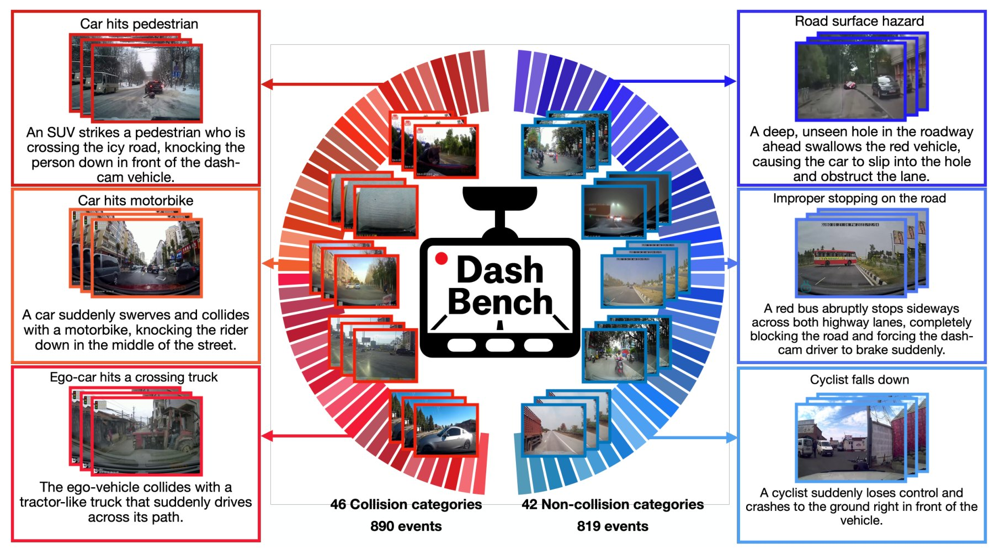
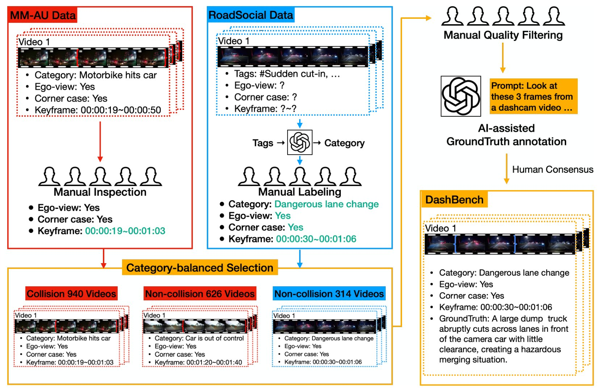
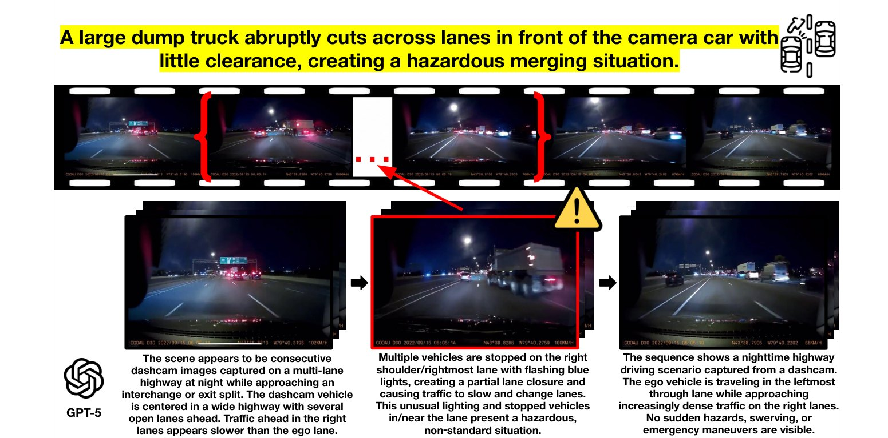
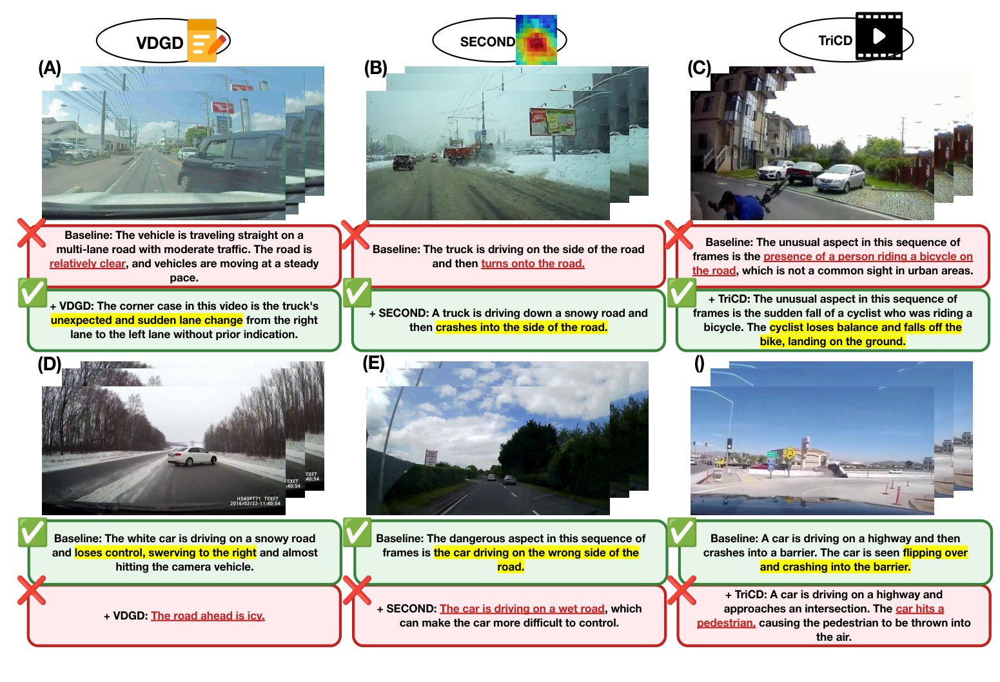

Across 25 Video LLMs and 1,709 dashcam corner cases, the best model (GPT-5) correctly explains only 46.52% of corner cases on its best prompt and averages 34.75%. Driving-specialist models fine-tuned on AD data reach at most 10.01%.
Video LLMs routinely miss the hazard in plain sight, or describe hazards that never happened.
Abstract
Natural language explanations promised by modern Video Large Language Models (Video LLMs) offer autonomous driving systems a path toward detailed scene description and interpretable decision making on the road. While recent benchmarks have begun assessing these models on driving scenes, they mainly target routine traffic conditions and general comprehension tasks based on existing driving datasets and therefore fail to evaluate model performance on the rarest and most safety-critical driving events, also known as corner cases.
To provide a comprehensive evaluation of Video LLMs on precisely these scenarios, we introduce DashBench, a benchmark testing 25 Video LLMs on 1,709 carefully curated driving videos spanning not only collision-related corner cases but also rare non-collision ones. Through extensive prompts and open-ended question answering, we expose a critical capability gap: all evaluated models perform substantially below the threshold required for safety-critical driving applications, frequently misjudging or missing dangerous events on the road ahead and hallucinating non-existent agents or actions in their explanations.
Why Corner Cases?
Autonomous driving systems increasingly use Video LLMs to narrate what they see and why they act. That promise matters most in corner cases: rare, unexpected situations that deviate from normal traffic, such as a truck losing control, a cow wandering onto a highway, or a utility pole snapping across the road. Existing benchmarks either cover routine traffic, restrict themselves to crashes, test only static object-level anomalies, or use multiple-choice formats that reward option-picking over real understanding.
The DashBench Dataset

1. Source & filter
All MM-AU non-collision clips are kept and manually inspected. RoadSocial's 13.2K social-media videos are mapped from tags to corner-case categories with an LLM-assisted pipeline, then checked for ego-view dashcam perspective.
2. Annotate & balance
Five annotators over four months verify each corner case and label keyframes (start, most observable, end). Collision clips are sampled across all 46 MM-AU collision categories for a category-balanced set.
3. Ground truth
OpenAI o3 drafts a one-sentence description from three keyframes plus the category, then three annotators refine each draft into a consensus ground-truth label.
Example Gallery
Prompts
DashBench is an open-ended, free-text benchmark. Every clip is queried with five prompts that vary how strongly the model is cued to look for danger: Q1–Q2 explicitly ask for anomalies, Q3 asks for a plain description with no hint, Q4 asks for a binary decision plus reasoning in JSON, and Q5 first defines what a corner case is.
System prompt: "You are a helpful driving-scene assistant. Please be brief and concise in your description. Answer within 250 words."
Leaderboard
Accuracy (%) of 25 Video LLMs on all 1,709 corner cases. Avg is the mean of Q1, Q2, Q3, Q4R and Q5. Click a column header to sort.
Bold = best and underline = second best within a family (per column). "–" means the model could not consistently answer Q4 in the required JSON format. Q4TF measures only binary detection, not grounded explanation.
Key Findings
Corner cases stay hard at every scale
< 35% avgNo model exceeds 50% on any prompt. Scaling Qwen3-VL from 8B to 235B adds only about 2 points (18.48% → 20.67%), and the best open model trails GPT-5 by over 14 points.
Reasoning and driving fine-tuning don't help
≤ 10.01%Seven driving-specialist models fine-tuned on AD datasets score at most 10.01% on average, and several collapse to near zero. Thinking models (GLM-4.1V-Thinking: 6.33%) show no consistent advantage.
Models see what they're told to look for
−55 ptsDetection (Q4TF) is far higher than grounded explanation (Q4R): accuracy drops by about 55 points on average once models must justify their answer. Q3, which gives no hint of danger, is the lowest-scoring prompt for almost every model.
Missed hazards and hallucinated ones
2 failure modesCorner-case blindness: fluent, confident descriptions that ignore the hazard. Agent/action hallucination: invented vehicles, objects, or actions, and collisions downgraded to near-misses.
On the 823 clips where the hazard covers less than half of the clip, we resample all 16 frames from the annotated corner-case window (CCW). Closed-source models gain about 4 points, while open-source models gain only 0.8–2 points. Q1 ("what is unusual?") can even drop, because removing the surrounding normal footage removes the reference for what is unusual.

Full-video run vs. CCW run (16 frames from the corner-case window only). Subscripts show the change in points.
We apply three recent training-free decoding methods to InternVL3.5 (8B). TRiCD, the video-native method, gives the largest gain at only +1.16 points; VDGD hurts performance. Each method flips some answers from wrong to right and others from right to wrong.

Takeaway
Current Video LLMs, whether open or proprietary, large or small, reasoning or not, general or driving-specialized, fall critically short on corner cases. Prompt wording, temporal localization, and training-free decoding all yield only marginal gains. Closing the gap will need fundamentally new approaches: stronger visual grounding, training on diverse corner-case scenarios, and possibly driving world models that can synthesize rare, controllable safety-critical events.